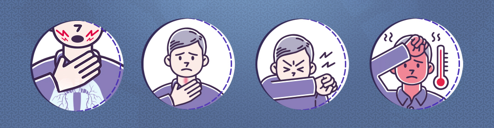
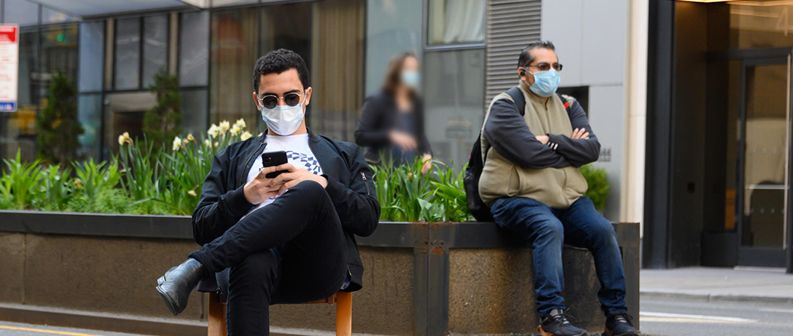
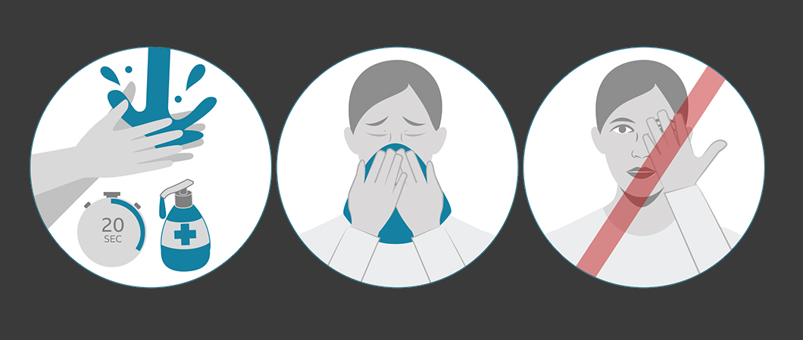
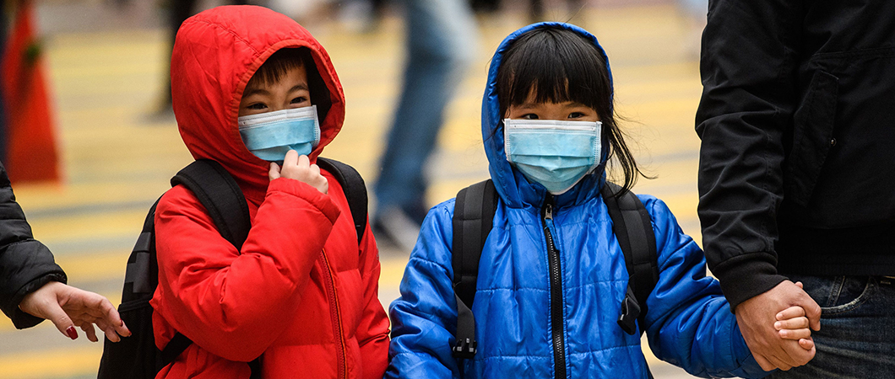

Corona
what is Coronavirus symptoms? and how is it transmitted? how to boost immunity against coronavirus? stay safe and learn with us more in Ilajak medical.

Coronavirus Symptoms and Causes
Coronavirus Symptoms and Causes
A coronavirus is a group of viruses that cause diseases ranging from colds to more serious diseases such as Middle East Respiratory Syndrome(MERS) and Severe Acute Respiratory Syndrome (SARS).
The most common symptoms are:
- Fever, cough, shortness of breath and breathing difficulty.
- In more severe cases the infection can cause pneumonia, acute respiratory syndrome and even death.
Coronavirus is from an animal source. This means that it develops in animals and then transmit to humans.
Table oF Content
- Coronavirus Symptoms and Causes
- Coronavirus incubation period
- Coronavirus recovery rate
- The difference between corona and influenza
- Corona Virus Prevention
- Are women and children less likely to develop Coronavirus?
- How do a few people spread viruses?
- Coronavirus "Transmit between humans before symptoms appear"
- Turkey's health system

For the virus to be transmitted from animal to human being, a person must be in close contact with an infected animal.
Once the virus develops in humans, the coronavirus can spread from person to person through respiratory droplets. This is a technical name for airborne wet substances produced by coughing or sneezing.
These droplets contain a viral substance and can be inhaled into the respiratory tract (trachea and lungs), where the virus can then lead to infection.
The COVID-19 virus has not been definitively linked to a particular animal.
Researchers believe that the transmission of this virus occurred in the open food market in Wuhan, China.
Coronavirus incubation period
"Incubation period" means the period between the exposure to the virus and the onset of symptoms.
Coronavirus recovery rate
The recovery of Coronavirus depends on many factors, some related to the people such as the age of the infected person, the presence of chronic diseases such as heart disease, diabetes, etc. , their immunity strength and compliance with laws and advice and there are external factors such as the quality of health care and government measures to impose Social distancing and cancellation of gatherings and other measures.
Epidemiologists say that the recovery rate of the coronavirus will not be clear until the outbreak is over, and see the full data, it is worth noting that most people infected with the COVID-19 are recovering at home, while some need hospitalization.
The difference between corona and influenza
• Danger and symptoms
There is a misconception that COVID-19 is similar to the common seasonal flu. Both cause respiratory diseases and are transmitted by contact, respiratory droplets and contaminated surfaces touched by an infected person.
But it varies greatly in severity. According to the World Health Organization (based on currently available data), 80% of COVID-19 Infections are mild or asymptomatic, 15% are severe (require oxygen) and 5% are dangerous (require ventilation). These numbers are much higher than are usually observed in influenza.
• The rate of recovery and death
The death rate is relatively higher for people with Coronavirus.
Corona Virus Prevention
There is currently no vaccine to prevent COVID-19.
Therefore, the best way to prevent disease is to avoid exposure to this virus.
It is believed that the virus mainly spreads from one person to another, especially between people in close contact with each other (about 6 feet), through respiratory droplets that result from an infected person cough or sneeze.
Staying at home
If you isolate yourself at home, you should:
- Do not leave the house for any reason, other than doing sports once a day - but stay 2 meters away from other people
- Don’t go out to buy food or medicine - order it on the phone or online, or ask someone else to deliver it to your home
- Canceling or postponing visits by friends and family at home
Social distancing
Physical or Social distancing by avoiding large public gatherings or public transportation and stay away from others when you are in public places by keeping at least two meters (6 feet) between you and anyone who coughs or sneezes.

Why? When a person coughs or sneezes, he produces small droplets from his nose or mouth that may contain a virus. If you are very close, you can breathe or inhale these droplets, including the Coronavirus if the coughing person is infected.
Personal hygiene
Personal hygiene in general and the cleanliness of the hands in particular, by washing them with soap and water for not less than 20 seconds, especially after being in a public place, or after coughing or sneezing.
If soap and water are not readily available, use a hand sanitizer that contains no less than 60% alcohol, place the sanitizer on all surfaces of your hands and rub them together till dry.

ALWAYS REMEMBER !! Avoid touching your eyes, nose, and mouth with unwashed hands.
Face masks role in preventing Coronavirus
If you are sick: You must wear masks when approaching other people (for example, sharing a room or car) and before entering a health care center. If you are unable to wear a face mask (for example, because it causes breathing difficulty), you must do your best to cover up coughing and sneezing, and people who live with you should wear the face mask if they approach you or enter your room.
If you are not sick: You do not need to wear a face mask unless you take care of a sick person (and cannot wear the face mask). In some countries, face masks may be few and should be kept for Health care personnel.
Use antiseptics to prevent Coronavirus
For surfaces, first, wipe them with regular household soap or detergent and then rinse with water. Then use a regular household antiseptic, such as bleach - the active substance (sodium hypochlorite) in the bleach eliminates germs, fungi, and viruses. Be sure to protect your hands when using bleach (by wearing rubber gloves, for example). Dilute the bleach with water, according to the instructions on the package. You can also use antiseptic and sterile materials that contain alcohol with a ratio of no less than 60-70% or materials that contain 0.5% of the hydrogen peroxide.
We must not be confused between the materials used to clean surfaces and materials suitable for human beings. It is worth noting that continuous cleaning with water and soap for not less than 20 seconds is sufficient for personal hygiene, and sterilizers and disinfectants should not be used for personal hygiene in this case.
Use of detergents to prevent Coronavirus
Cleaning with soap or detergent and water removes germs, dirt, and impurities from the surfaces and reduces their numbers and the risk of infection spread, followed by sterilization and disinfection to eliminate germs and viruses, and this process must be done regularly and repeatedly to ensure the absence of infection and disease-causing pathogens.
Be sure to protect your hands when using cleaning products and always follow the safety instructions on cleaning products and disinfectants. Cleansing usually requires that the cleaning product remains on the surface for a certain time, for example, 3 to 5 minutes.
It is worth noting that the cleaning and disinfection should focus on frequently and most touched things and surfaces, such as door handles, taps in the bathrooms, keyboard and desks in the workplace, play area in schools and other things that pose the greatest risk in transmitting the infection.
Do the sun's rays help to prevent Coronavirus?
Is this a good way to protect from COVID 19? And is it true that since "the Novel Coronavirus hates the sun", the sun's rays will kill it immediately, as some reports claim on social media?
In short: no. Here is why.
Radiation is dangerous
Sunlight contains three types of UV rays. First, there is the UVA, which accounts for the vast majority of ultraviolet radiation that reaches the Earth's surface. It can penetrate deeply into the skin and is believed to be responsible for 80% of skin aging, such as wrinkles, age spots, and more.
Then there is UVB, which can damage the DNA in our skin, which ultimately leads to sunburn and skin cancer (scientists recently discovered that UVA can also do this). Both are reasonably known and can be banned by most good sunblock creams.
Both UVA and UVB harm the skin - but nothing as harmful as UVC
There is also a third type: UVC. This relatively obscure part forms a shorter, more active wave of light. It is especially good at destroying genetic material - whether in humans or viral particles. Fortunately, most of us are unlikely to have encountered any of them. This is because it is filtered by the ozone layer in the atmosphere long before it reaches our skin.
Are women and children less likely to develop Coronavirus?
All of our information comes from an extensive study by the Chinese Center for Disease Control and Prevention.
It looked at 44,000 people and showed that 2.8% of infected men died, compared to 1.7% of women, where 0.2% of children and adolescents died, compared to nearly 15% of people over the age of 80.
There are two ways to explain the results.
Either these groups are less likely to be infected in the first place, or their bodies are more able to deal with the virus.

"One reason we don't see many cases in children is that they are protected from the onset of an outbreak: parents keep children away from sick patients," says Dr. Nathalie McDermott, of King's College in London.
Part of the answer is that men's health condition is generally worse than women because of lifestyle like smoking.
This study is particular to China, where it is estimated that 52% of men smoke, compared to only 3% of women.
But there are also differences in the way that immune systems in men and women respond to infection.
"Women have immune responses that are intrinsically different from men," says Professor Paul Hunter of the University of East Anglia. "Women have autoimmune diseases, and there is good evidence that women are developing better antibodies to vaccines against influenza."
How do a few people spread viruses?
On average, each person infected with the Novel Coronavirus transmits it to two or three other people.
But this is only average. Some people will never pass it to anyone, while others will pass it to much more.
That depends on the person’s awareness and sense of responsibility, some of them will abide the instructions and keep a distance with others or remain completely at home and some will not abide the instructions and transmit the infection first to their surroundings like friends and family, then to their community and we can imagine if there are a lot of such people in our society what will be the result!?.
Coronavirus "Transmit between humans before symptoms appear"
The main way to spread the disease is through respiratory droplets from someone who coughs or sneezes. The risk of developing COVID-19 from an asymptomatic person is very low.
But according to Robert R. Redfield, Director of the Centers for Disease Control and Prevention, up to 25% of people with the Novel Coronavirus may not have symptoms, but they can still transmit the disease to others.
Redfield added that these asymptomatic patients are likely contributing to the rapid spread of the Coronavirus around the world, the number of confirmed cases has exceeded a million this week, making it difficult for experts to assess the true extent of the epidemic.
Turkey's health system
We saw the global health system collapse for several reasons, the most important is that it is new and no accurate information about it. The World Health Organization is working to stop the escalation of this rapid spread. Hospitals can not accommodate this large number of patients at the same time or within a short time, as we have seen in Europe, but in Turkey, doctors are used to examining approximately 1,000 patients daily and hospitals are accustomed to this burden.
Following the Filyasyon procedure is a medical term that means the process of scanning a chain of people who are likely to have an infectious disease.
It is a unique system that works by looking for the source of infection and not a comprehensive survey, which distinguishes the health system in Turkey and the impressive success achieved.
Despite significant infections throughout Turkey and Istanbul, in particular, only less than 60% of the beds are occupied in Istanbul and less than 35% in all of Turkey.
See an interactive map showing in numbers the areas of Novel Corona virus outbreak : Corona injuries around the world
Ilajak Medical© | A passion for care
Source:
How to Protect Yourself & Others , health-topics , social distancing , who get the coronavirusLatest Articles, Health News, Clinical Research, and more.
Keratoconus and cataracts , symptoms and types
What is Keratoconus, How it looks and what are the symptoms? Also, find out Keratoconus’s types and stages , Learn more with ILAJAK Medical.
Best Spa Resorts with Medical Services clinics in Turkey.
In this article, we will learn about the importance of health resorts and the treatment services they offer and the top and famous health & medical resorts in Turkey
Zirconia teeth type and costs in Turkey 2021
Zirconia dental crowns and bridges are used to treat and protect the affected teeth due to decay or fractures, etc, In this article we will learn about the advantages and drawbacks of Zirconia Crowns and bridges
Benefits of porcelain teeth and costs in Turkey 2021
Porcelain crowns and veneers are used to strengthen and protect damaged teeth due to decay or cracks or any other reason. In this article, we will discover dental porcelain and its advantages and risks.